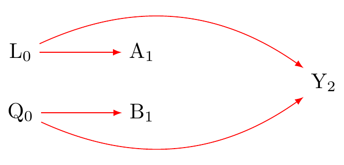
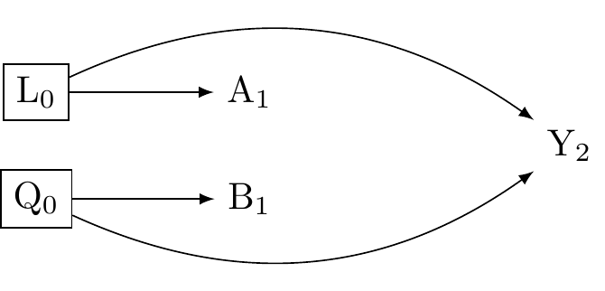
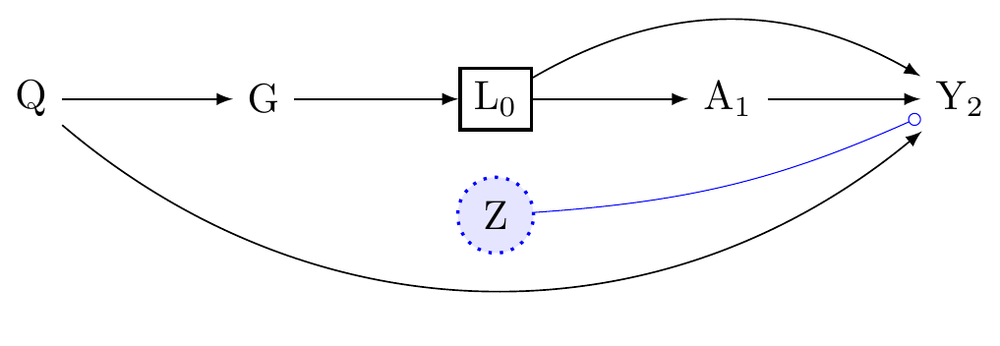
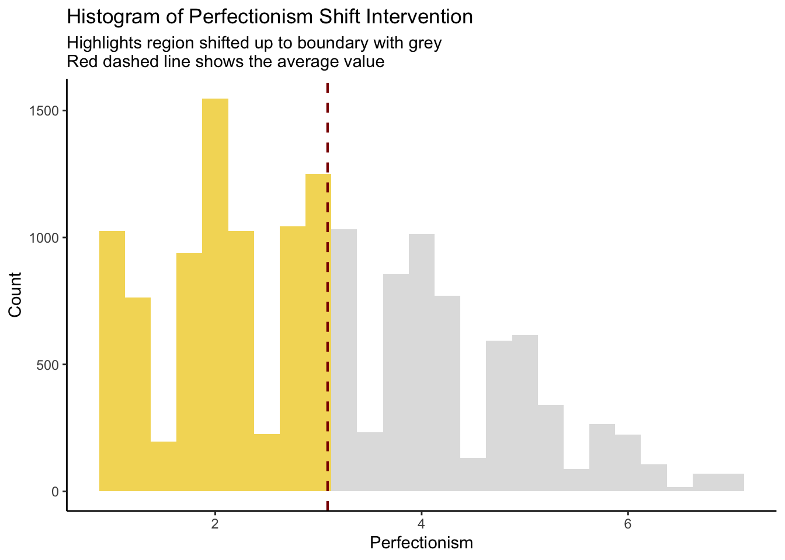
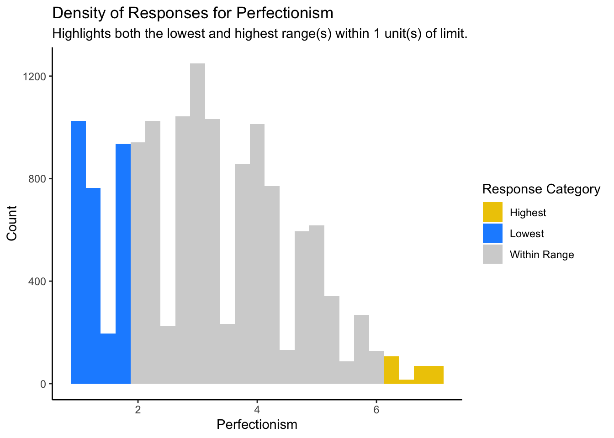
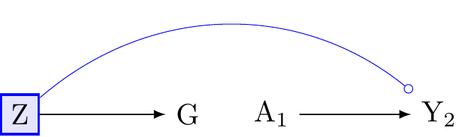
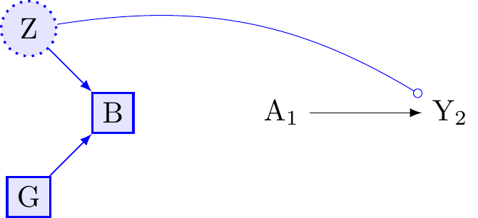
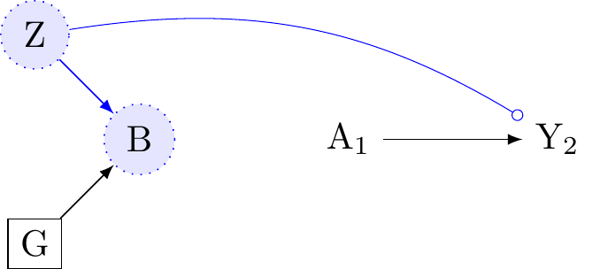
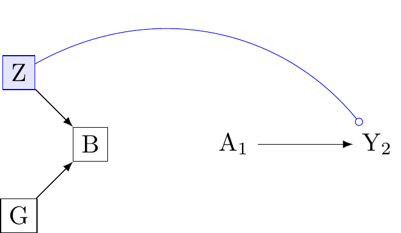

![]()
library("margot")
library("tidyverse")
library("ggplot2")
library("here")
library("skimr")
if (!require(gtsummary)) install.packages("gtsummary")
if (!require(janitor)) install.packages("janitor")
# if you need to update the margot package, uncomment and do this
# devtools::install_github("go-bayes/margot")
#devtools::install_github("go-bayes/margot")
Note
Required - (Hernan and Robins 2024) Chapters 4-5 link
Optional - (Tyler J. VanderWeele and Robins 2007a) link - (Tyler J. VanderWeele 2009) link
———. 2007a. “Four types of effect modification: a classification based on directed acyclic graphs.” Epidemiology (Cambridge, Mass.) 18 (5): 561–68. https://doi.org/10.1097/EDE.0b013e318127181b.
Hernan, M. A., and J. M. Robins. 2024. Causal Inference: What If? Chapman & Hall/CRC Monographs on Statistics & Applied Probab. Taylor & Francis. https://www.hsph.harvard.edu/miguel-hernan/causal-inference-book/.
Key concepts for the test(s):
- Causal Estimand
- Statistical Estimand
- Interaction/Moderation
- Heterogeneous Treatment Effects
- Conditional Average Treatment Effect
- Effect Modification
If you learning nothing else from this course…
To answer a psychological question we must first ask it.
Causal inference begins by stating a counterfactual contrast
In the simpliest case, we calculate the contrast between two or more “treatments” or equivalently “exposures”:
\text{Average Treatment Effect} = \mathbb{E}[Y(a^*) -Y(a)]
After Stating the Causal Interest, We State the Conditions Needed for Identifying This Effect from Data
In observational studies, the next step is to identify this effect by controlling for common causes of both the treatment and outcome (or proxies of such common causes). The regression standardization formula is:
\widehat{\text{ATE}} = \int \left( \mathbb{E}[Y(a^*) \mid L] - \mathbb{E}[Y(a) \mid L] \right) dP(L)
Where:
- Statistical Estimand: \widehat{\text{ATE}}, is the estimated average treatment effect.
- \mathbb{E}[Y(a^*) \mid L]: is the expected value (mean) of the outcome variable Y when the treatment a^* is applied, given the confounders L.
- \mathbb{E}[Y(a) \mid L]: is the expected value of Y when the treatment a is applied, given L.
- \mathbb{E}[Y(a^*) \mid L] - \mathbb{E}[Y(a) \mid L]: is the difference in the expected treatments, controlling for L.
- \int (...) dP(L): dP(L) is an integral (remember high school math?). Integrals give us areas under curves. Here the area is a distribution of probabilities. To obtain valid inference, the treatment effect is computed over all the probability distribution of L in the population.
So, in the simplest possible terms
Understanding causal inference is fundamentally about comparing what happened with what could have happened an average under different conditions or treatments in some population, while carefully accounting for factors that might confound or distort the comparison that interests us (i.e. that might give a false answer to the question we asked).
What do the words “Moderation” and “Interaction” mean?
We here these words used freely in psychology. What do they mean? Causal inference allows us to be precise.
Let’s set the term moderation to the side, and in its place consider “effect-modification.” Our task today is to use counterfactual notation to distinguish between two concepts:
- Interaction
- Effect-modification
Interaction
An interaction is a joint intervention
When assessing “interaction” we are interested in the combined effect of two interventions (two “treatments” or “exposures”).
Call these treatments, A and B. Call the outcome Y.
Recall that in potential outcomes terminology, we defined the potential outcome under treatment A = \tilde{a}:
Y(\tilde{a})
And we identify Y(\tilde{a}) from data using the consistency assumption: Y_i(\tilde{a}) = (Y_i |A_i = \tilde{a}), assuming that Y_i(\tilde{a})\coprod A|L, where, again, L donotes a set of measured covariates sufficient to insure no confounding (no common causes), or equivalently, no open backdoor path between A and Y.
A joint intervention of two treatments, call them A and B, which may act on Y, requires that we extend our notation:
Y(\tilde{a}, \tilde{b}) This is the effect on Y when A is set to \tilde{a} amd B is set to \tilde{b}.
In addition to requiring Y_i(\tilde{a}) = (Y_i \mid A_i = \tilde{a}), assuming that Y_i(\tilde{a}) \coprod A \mid L, we require that for all i \in 1\dots N individuals in the target population, both Y_i(\tilde{b}) = (Y_i \mid B_i = \tilde{b}), and that Y_i(\tilde{b}) \coprod B \mid Q, where Q denotes a set of confounders sufficient to ensure no confounding for the effect of B on Y.
Notably, the sets L and Q may have overlapping variables, which in set notation we write:
L \cap Q \not\equiv \emptyset
That is the union of L and Q does not imply the empty set, which implies that identification may be harder when there are interactions. Statistical estimation is more difficult too, but we’ll ignore that.
How do we define such a contrast between two interventions of equal status in our model?
Consider the effect of beliefs in Big Gods (treatment, denoted A) on social complexity (outcome, denotedY), potentially influenced by a culture’s monumental architecture (treatment, denoted B). Suppose we wish to assess the individual and combined effects of A and B on the difference scale. Let assume the treatments are binary variables.
In the counterfactual framework, we say there is evidence for interaction only if the following inequality were to hold:
\bigg(\underbrace{\mathbb{E}[Y(1,1)]}_{\text{joint exposure}} - \underbrace{\mathbb{E}[Y(0,0)]}_{\text{neither exposed}}\bigg) - \bigg[ \bigg(\underbrace{\mathbb{E}[Y(1,0)]}_{\text{only A exposed}} - \underbrace{\mathbb{E}[Y(0,0)]}_{\text{neither exposed}}\bigg) + \bigg(\underbrace{\mathbb{E}[Y(0,1)]}_{\text{only B exposed}} - \underbrace{\mathbb{E}[Y(0,0)]}_{\text{neither exposed}} \bigg)\bigg] \neq 0
Expanding the terms inside the brackets:
\mathbb{E}[Y(1,1)] - \mathbb{E}[Y(0,0)] - \mathbb{E}[Y(1,0)] + \mathbb{E}[Y(0,0)] - \mathbb{E}[Y(0,1)] + \mathbb{E}[Y(0,0)]
And cancelling \mathbb{E}[Y(0,0)], which appears three times, once with a minus sign and twice with a plus sign, simplifies to:
\mathbb{E}[Y(1,1)] - \mathbb{E}[Y(1,0)] - \mathbb{E}[Y(0,1)] + \mathbb{E}[Y(0,0)]
And we define interaction on the additive scale:
\underbrace{\mathbb{E}[Y(1,1)]}_{\text{joint exposure}} - \underbrace{\mathbb{E}[Y(1,0)]}_{\text{only A exposed}} - \underbrace{\mathbb{E}[Y(0,1)]}_{\text{only B exposed}} + \underbrace{\mathbb{E}[Y(0,0)]}_{\text{neither exposed}} \neq 0
The estimand is net interaction effect, after accounting for the individual effects of A and B, as well as the baseline where neither treatment A nor treatment B is given.
A positive value would indicate evidence for additive interaction. A negative value would indicate evidence for sub-additive interaction. A value near zero would imply no reliable evidence for interaction.
Note that the order of the terms does not matter:
Y(\tilde{a}, \tilde{b})\equiv Y(\tilde{b}, \tilde{a})
Having defined the causal estimand, we next consider what would be needed to identify it using data?
For this we can write our causal diagram. Figure 1 describes the structure of the identification problem:

Here, Figure 1 clarifies the need to evaluate two sources of counfounding, one for each intervention (A and B).
By adjusting for L_{0} we obtain an unbiased estimate of the A\to Y path.
By adjusting for Q_{0} we obtain an unbiased estimate of the B\to Y path. As indicated in Figure 2, we must condition on both L_{0} and Q_{0} to identify causal interaction conceived as a joint interaction.

Consider the following set of plausible confounders:
L: variables in L that might confound the relationship between beliefs in Big Gods and social complexity:
- General religiosity: prevalence of religion might influence both the belief in Big Gods and social complexity.
- Cultural norms and values: ingrained social norms and values, not any part of religion.
- Historical path dependent events: e.g. conquest.
- Education: affects religious beliefs and the complexity.
- Economic development: economic conditions might whether people prefer religious practices or resource intensive hobbies and also, social complexity.
- Political stability: stable governance can influence both the proliferation of religious practices and the development of complex social structures
- Political complexity in the past: huge confounder, must be adjusted for.
- Beliefs in big gods in the past: huge confounder, must be adjusted for.
Q: variables in Q that that might confound the relationship between monumental architecture and social complexity:
- Technology: for constructing of monumental architecture and managing social complexity.
- Economic resources: as above (overlap)
- Historical path dependent events: e.g. conquestm as above
- Labour: the availability of builders, slaves, etc.
- Geography: natural resources can affect a society’s ability to build monumental structures and its social development.
- Cultural norms and values: ingrained social norms and values, not any part of religion.
- Political complexity in the past: huge confounder, must be adjusted for.
- Beliefs in big gods in the past: huge confounder, must be adjusted for.
As we see:
L \cap Q \not\equiv \emptyset
However, the set of control variables are larger, and note, we are assuming that monumental architecture and big God beliefs do not affect each other.
Effect Modification
It is often scientifically interesting to consider whether treatment effects vary over levels of other variable without imagining a double intervention. Broadly, we will think of “effect-modification” as a set of related and overlapping concepts pertaining to the understanding variability of a single effect within a population.
Heterogeneous Treatment Effects – a broad concept of effect-modification
Heterogeneous Treatment Effects (HTE) refer to settings where treatment effects vary across individuals or subgroups within a study population. This variability can arise from differences in baseline characteristics, environmental conditions, histories, …. much of which is unmeasured.
Appendix A discusses the challenges in identifying HTE from data, but we already know that individual causal effects are not typically identifiable, and so heteroeneous treatment effects, at the limit of individual causal effects, are elusive.
Conditional Average Treatment Effect (CATE) – a narrower concept of effect-modification.
We might be interested estimating average treatment effects within specific levels of measured covariates
When our focus is estimation of the average treatment effect conditional on a specific level of a covariate or set of covariates. Our causal estimand is often written:
\text{CATE}(x) = E[Y(1) - Y(0) | X = x]
where X = x, where X denotes the level of a measured covariate or covariates of interest.
The question: how does a causal effect vary within the population defined by levels of stratum X=x
Comparing Effect Heterogenity in Groups.
We might be interested in the following causal quantity (estimand), which compares two conditional average treatment effects between levels defined by G = \tilde{g}:
{\gamma} = \overbrace{\big( \mathbb{E}[Y(a^*)|G=g] - \mathbb{E}[Y(a)|G=g] \big)}^{{\delta_g}} - \overbrace{\big(\mathbb{E}[Y(a^*)|G=g^{\prime}]- \mathbb{E}[Y(a)|G=g']\big)}^{{\delta_{g^{\prime}}}}
Suppose A is the treatment, G is the effect-modifier, and Y is the outcome. The analysis of effect-modification assesses whether the effect of A on Y is different across levels of G (i.e., whether the effect of A on Y is different when G = g_1 compared to when G = g_2).
What do we need to identify such effects? Note that G here is not an intervention variable. It might not be coherent to imagine that G can be intervened upon.
Figure 3 is a causal diagram. Imagine we are intereste in whether the effect of A on Y differs across levels of G. Because we are not interested in the causal effect of G as such, but rather, how the effect of A varies across G, we need not adjust by Q. However, which variables shall we include in our model? What will happen if we assess the G by examining a regression coefficient? Suppose L were not a confounder of A to Y. How then should we interpret our model?

Often, it is useful to obtain causal effects by restricting to one level of a population. Where G denotes a society, consider:
- Causal effect within North American societies (G=1): \delta_{g_1} = \mathbb{E}[Y(1)|G= g_1] - \mathbb{E}[Y(0)|G = g_1]
Here, \delta_{g_2} represents the estimated causal effect of changing the exposure from A = 0 to A = 1 within the North American societies.
Causal effect within Continental societies (G=g_2):
\delta_{g2} = \mathbb{E}[Y(1)|G=g_2] - \mathbb{E}[Y(0)|G=g_2]
Similarly, {\delta}_{g_2} denotes the estimated causal effect for the Continental societies.
Comparing causal effects across groups:
{\gamma} = {\delta}_{g_1} - {\delta}_{g_2}
The quantity {\gamma} defines the difference in the causal estimands between the two groups. A nonzero \hat{\gamma} indicates effect-modification, suggesting that the effect of changing the exposure differs between the two groups. If we were to observe that \hat{\gamma} \neq 0, this would provide evidence for variability in the effect of the exposure on the outcome in different groups. Note that the causal effect for one group might be indistinguishable from zero, and yet we might nevertheless find evidence for effect-modification if the comparison group exhibits reliably different responses from the contrast group that is indistinguishable from zero.
That’s it, we now know our causal quantity of interest. Next week, we’ll develop our statistical estimands, estimators, and begin evaluating effect-modification by groups.
Summary of what we learned
- Interaction targets a joint intervention in a population
- Effect modificiation targets how a single intervention varies by groups within a population
Note, to obtain the group-wise contrasts, we must be able to imagine the groups as belonging to a larger population. When thinking of people, we all belong Later we shall consider how measurement complicates this assumption, even if all humans belong to the same species…
Lab Part 1: Setting up your data
Set up your libraries
Set up a path to a folder in your directory
This will allow you to save the outputs of models and other information, which will be handy when you are producing your manuscript. Call this push_mods
### Set up a path to a folder in your directory
# create a folder called saved and make a path like this
push_mods <- here::here('/Users/joseph/Library/CloudStorage/Dropbox-v-project/data/saved')
# view it (will be different for you)
push_mods[1] "/Users/joseph/Library/CloudStorage/Dropbox-v-project/data/saved"# another option
# saveRDS(object, here::here(push_mods, "object"))Initial Data Wrangling to select the study sample
Where to find variable names information
Find it the data directory here: https://osf.io/75snb/
Also see here: https://github.com/go-bayes/templates/tree/main/method
Think, what are my eligibility criteria?
- Participated in at baseline
- Participated at treatment wave
- May have been lost to follow up at the end of the study
- Full information on the treatment variable (think about this…)
library(margot)
# eliminate haven labels
df_nz <- as.data.frame(df_nz)
df_nz <- haven::zap_formats(df_nz)
df_nz <- haven::zap_label(df_nz)
df_nz <- haven::zap_widths(df_nz)
# name output folder
push_mods <- here::here("outputs")
# set exposure name
name_exposure <- "perfectionism"
# obtain ids for individuals who participated in 2018 and have no missing baseline exposure
ids_2018 <- df_nz %>%
dplyr::filter(year_measured == 1, wave == 2018) %>%
dplyr::filter(!is.na(!!sym(name_exposure))) |> # criteria, no missing
pull(id)
# obtain ids for individuals who participated in 2019
ids_2019 <- df_nz %>%
dplyr::filter(year_measured == 1, wave == 2019) %>%
dplyr::filter(!is.na(!!sym(name_exposure))) |> # criteria, no missing
pull(id)
# intersect IDs from 2018 and 2019 to ensure participation in both years
ids_2018_2019 <- intersect(ids_2018, ids_2019)
# data wrangling
dat_long <- df_nz |>
dplyr::filter(id %in% ids_2018_2019 &
wave %in% c(2018, 2019, 2020)) |>
arrange(id, wave) |>
select(
"id",
"wave",
"year_measured",
"age",
"male",
"born_nz",
"eth_cat",
#factor(EthCat, labels = c("Euro", "Maori", "Pacific", "Asian")),
"employed",
# Are you currently employed? (this includes self-employment or casual work)
"edu",
# "gen_cohort",
"household_inc",
"partner",
# 0 = no, 1 = yes
"parent",
"alert_level_combined_lead", # see bibliography
# 0 = no, 1 = yes
"political_conservative", # see nzavs sheet
"hours_exercise", # see nzavs sheet
"agreeableness",
# Mini-IPIP6 Agreeableness (also modelled as empathy facet)
# Sympathize with others' feelings.
# Am not interested in other people's problems.
# Feel others' emotions.
# Am not really interested in others.
"conscientiousness",
# see mini ipip6
# Get chores done right away.
# Like order.
# Make a mess of things.
# Often forget to put things back in their proper place.
"extraversion",
# Mini-IPIP6 Extraversion
# Am the life of the party.
# Don't talk a lot.
# Keep in the background.
# Talk to a lot of different people at parties.
"honesty_humility",
# see mini ipip6
# Would like to be seen driving around in a very expensive car.
# Would get a lot of pleasure from owning expensive luxury goods.
# Feel entitled to more of everything.
# Deserve more things in life.
"openness",
# see mini ipip6
# Have a vivid imagination.
# Have difficulty understanding abstract ideas.
# Do not have a good imagination.
# Am not interested in abstract ideas.
"neuroticism",
# see mini ipip6
# Have frequent mood swings.
# Am relaxed most of the time.
# Get upset easily.
# Seldom feel blue.
"modesty",
# # see mini ipip6
# # I want people to know that I am an important person of high status,
# # I am an ordinary person who is no better than others.
# # I wouldn’t want people to treat me as though I were superior to them.
# # I think that I am entitled to more respect than the average person is
#"w_gend_age_ethnic",
"sample_weights", # see nzavs sheet
"neighbourhood_community",
# #I feel a sense of community with others in my local neighbourhood.
"belong", # see nzavs sheet
"rural_gch_2018_l",# see nzavs sheet
"support",
# "support_help",
# # 'There are people I can depend on to help me if I really need it.
# "support_turnto",
# # There is no one I can turn to for guidance in times of stress.
# "support_rnoguidance",
#There is no one I can turn to for guidance in times of stress.
"perfectionism",
"religion_religious",
"kessler_latent_depression",
"kessler_latent_anxiety"
) |>
mutate(
#initialize 'censored'
censored = ifelse(lead(year_measured) == 1, 1, 0),
# modify 'censored' based on the condition; no need to check for NA here as 'censored' is already defined in the previous step
censored = ifelse(is.na(censored) &
year_measured == 1, 1, censored)
) |>
select(-year_measured) |>
dplyr::mutate(
# rescale these variables, to get all variables on a similar scale
# otherwise your models can blow up, or become uninterpretable.
household_inc_log = log(household_inc + 1),
hours_exercise_log = log(hours_exercise + 1) ) |>
dplyr::select(
-c(
household_inc,
hours_exercise)
) |>
droplevels() |>
# dplyr::rename(sample_weights = w_gend_age_ethnic,
# sample_origin = sample_origin_names_combined) |>
arrange(id, wave) |>
mutate(
rural_gch_2018_l = as.numeric(as.character(rural_gch_2018_l)),
# parent = as.numeric(as.character(parent)),
partner = as.numeric(as.character(partner)),
born_nz = as.numeric(as.character(born_nz)),
censored = as.numeric(as.character(censored)),
employed = as.numeric(as.character(employed))
) |>
droplevels() |>
data.frame() |>
droplevels() |>
arrange(id, wave) |>
data.frame()
# check n in this sample
n_participants <- skimr::n_unique(dat_long$id)
# make number pretty
n_participants<- prettyNum(n_participants,big.mark=",")
# save this so that you can use it in your manuscript
margot::here_save(n_participants, "n_participants")Object saved to: /Users/joseph/GIT/psych-434-2025/outputs/n_participants.rds
Object size: 0.00 MB
👍 Save operation completed successfully!# try reading
n_participants_did_it_work_question_mark <- margot::here_read("n_participants")Object read from: /Users/joseph/GIT/psych-434-2025/outputs/n_participants.rds
Object size: 0.00 MB
👍 Read operation completed successfully!# view
# n_participants_did_it_work_question_markThere are N = 14,439 participants.
Define your baseline covariates, treatment (exposure), and outcome
# for example
baseline_vars = c("age", "male", "edu", "eth_cat", "partner", "employed", "born_nz", "neighbourhood_community", "household_inc_log",
"parent", "religion_religious", "rural_gch_2018_l","sample_weights", "employed", "alert_level_combined_lead")
# treatment
exposure_var = c("perfectionism", "censored") # we will use the censored variable later
# outcome, can be many
outcome_vars = c("kessler_latent_anxiety", "kessler_latent_depression")Make your baseline table
library(gtsummary)
# the setdiff command allows us to remove names from the baseline vars list that we do not want
base_var <-
setdiff(baseline_vars, c("censored", "sample_weights", "alert_level_combined_lead", outcome_vars))
# we only want the data at baseline
# select only baseline wave
dt_18 <- dat_long |>
dplyr::filter(wave == 2018)
# get only the baseline variables for the table
selected_base_cols <-
dt_18 |> select(all_of(base_var))
#check
colnames_use <- colnames(selected_base_cols)
colnames_use [1] "age" "male"
[3] "edu" "eth_cat"
[5] "partner" "employed"
[7] "born_nz" "neighbourhood_community"
[9] "household_inc_log" "parent"
[11] "religion_religious" "rural_gch_2018_l" # # aside to get different names in lists
# everything_better_cols <- c(colnames_use, "inkuk")
# everything_better_cols
#
# # get rid of name
# everything_worse_cols <- setdiff(everything_better_cols, "inkuk")
# baseline table
library(gtsummary)
# this is just a demo of another package, which can be useful for quick tables, less for your manuscripts
no_miss_df <- df_nz |>
drop_na()
table1::table1( ~ perfectionism | wave * eth_cat ,
data = no_miss_df,
overall = FALSE)
2018
|
2020
|
|||||||
|---|---|---|---|---|---|---|---|---|
| euro (N=6165) |
maori (N=717) |
pacific (N=156) |
asian (N=305) |
euro (N=4690) |
maori (N=493) |
pacific (N=95) |
asian (N=226) |
|
| perfectionism | ||||||||
| Mean (SD) | 3.06 (1.32) | 3.15 (1.34) | 3.22 (1.31) | 3.47 (1.26) | 2.94 (1.33) | 3.12 (1.44) | 3.20 (1.34) | 3.36 (1.37) |
| Median [Min, Max] | 2.97 [1.00, 7.00] | 3.00 [1.00, 7.00] | 3.04 [1.00, 6.97] | 3.35 [1.00, 7.00] | 2.69 [1.00, 7.00] | 2.98 [1.00, 7.00] | 3.00 [1.00, 6.69] | 3.34 [1.00, 6.64] |
table_baseline <- selected_base_cols |>
janitor::clean_names(case = "title") |>
tbl_summary(
missing = "ifany",
percent = "column",
statistic = list(
all_continuous() ~ c(
"{mean} ({sd})", # Mean and SD
"{min}, {max}", # Range (Min, Max)
"{p25}, {p75}" # IQR (25th percentile, 75th percentile)
)
),
type = all_continuous() ~ "continuous2"
) |>
modify_header(label = "**Exposure + Demographic Variables**") |> # update the column header
bold_labels()
# baseline
table_baseline| Exposure + Demographic Variables | N = 14,4391 |
|---|---|
| Age | |
| Mean (SD) | 50 (14) |
| Min, Max | 18, 94 |
| Q1, Q3 | 41, 61 |
| Male | 5,238 (36%) |
| Edu | |
| Mean (SD) | 5.38 (2.72) |
| Min, Max | 0.00, 10.00 |
| Q1, Q3 | 3.00, 7.00 |
| Unknown | 110 |
| Eth Cat | |
| euro | 11,835 (83%) |
| maori | 1,526 (11%) |
| pacific | 314 (2.2%) |
| asian | 655 (4.6%) |
| Unknown | 109 |
| Partner | 10,661 (76%) |
| Unknown | 399 |
| Employed | 11,466 (80%) |
| Unknown | 22 |
| Born Nz | 11,398 (79%) |
| Unknown | 25 |
| Neighbourhood Community | |
| Mean (SD) | 4.23 (1.66) |
| Min, Max | 1.00, 7.00 |
| Q1, Q3 | 2.99, 5.95 |
| Unknown | 73 |
| Household Inc log | |
| Mean (SD) | 11.41 (0.74) |
| Min, Max | 0.71, 14.40 |
| Q1, Q3 | 11.00, 11.92 |
| Unknown | 655 |
| Parent | 10,350 (72%) |
| Unknown | 8 |
| Religion Religious | 5,218 (36%) |
| Unknown | 19 |
| Rural Gch 2018 l | |
| 1 | 8,822 (62%) |
| 2 | 2,784 (19%) |
| 3 | 1,740 (12%) |
| 4 | 820 (5.7%) |
| 5 | 170 (1.2%) |
| Unknown | 103 |
| 1 n (%) | |
# save your baseline table
margot::here_save(table_baseline, "table_baseline")Object saved to: /Users/joseph/GIT/psych-434-2025/outputs/table_baseline.rds
Object size: 0.00 MB
👍 Save operation completed successfully!Make exposure wave table
# get first and second wave
dt_18_19 <- dat_long |>
dplyr::filter(wave == 2018 | wave == 2019) |>
# we need to drop unused levels of the wave
droplevels()
# get vars.
selected_exposure_cols <-
dt_18_19 %>% select(
c(
"perfectionism",
"wave"
)
)
# check
#str(selected_exposure_cols)
library(gtsummary)
table_exposures <- selected_exposure_cols %>%
janitor::clean_names(case = "title") %>%
labelled::to_factor() %>% # ensure consistent use of pipe operator
tbl_summary(
by = "Wave", #specify the grouping variable. Adjust "Wave" to match the cleaned column name
missing = "always",
percent = "column",
# statistic = list(all_continuous() ~ "{mean} ({sd})") # Uncomment and adjust if needed for continuous variables
) %>%
# add_n() %>% # Add column with total number of non-missing observations
modify_header(label = "**Exposure Variables by Wave**") %>% # Update the column header
bold_labels()
table_exposures| Exposure Variables by Wave | 2018 N = 14,4391 |
2019 N = 14,4391 |
|---|---|---|
| Perfectionism | 3.00 (2.01, 4.02) | 2.99 (2.00, 4.02) |
| Unknown | 0 | 0 |
| 1 Median (Q1, Q3) | ||
# save baseline
here_save(table_exposures, "table_exposures")Object saved to: /Users/joseph/GIT/psych-434-2025/outputs/table_exposures.rds
Object size: 0.00 MB
👍 Save operation completed successfully!table_exposures| Exposure Variables by Wave | 2018 N = 14,4391 |
2019 N = 14,4391 |
|---|---|---|
| Perfectionism | 3.00 (2.01, 4.02) | 2.99 (2.00, 4.02) |
| Unknown | 0 | 0 |
| 1 Median (Q1, Q3) | ||
Table for the outcome
# outcome table -----------------------------------------------------------
dt_18_20 <- dat_long |>
dplyr::filter(wave == 2018 | wave == 2020) |>
droplevels()
names_outcomes_tab <- setdiff(outcome_vars, dt_18_20)
names_outcomes_sorted <- sort(names_outcomes_tab)
names_outcomes_final <- names_outcomes_sorted # consistent workflow
# better names if desirable
selected_outcome_cols <-
dt_18_20 %>% select(all_of(names_outcomes_final),
wave)
# |> # example if you want to rename your variables for the table
# rename(
# Social_belonging = belong,
# Annual_charity = charity_donate,
# Volunteering_hours = hours_charity,
# Community_gives_money_binary = community_money_binary,
# Community_gives_time_binary = community_time_binary,
# Family_gives_money_binary = family_money_binary,
# Family_gives_time_binary = family_time_binary,
# Friends_give_money_binary = friends_money_binary,
# Friends_give_time = friends_time_binary,
# Social_support = support,
# Sense_neighbourhood_community = neighbourhood_community
# )
# order names correctly
selected_outcome_cols <- selected_outcome_cols %>%
select(sort(names(selected_outcome_cols)))
# checks
# str(selected_outcome_cols)
# colnames(selected_outcome_cols)
table_outcomes <- selected_outcome_cols %>%
janitor::clean_names(case = "title") %>%
labelled::to_factor() %>% # ensure consistent use of pipe operator
tbl_summary(
by = "Wave", #specify the grouping variable. Adjust "Wave" to match the cleaned column name
missing = "always",
percent = "column",
# statistic = list(all_continuous() ~ "{mean} ({sd})") # Uncomment and adjust if needed for continuous variables
) %>%
# add_n() %>% # Add column with total number of non-missing observations
modify_header(label = "**Outcome Variables by Wave**") %>% # Update the column header
bold_labels()
# save
margot::here_save(table_outcomes, "table_outcomes")Object saved to: /Users/joseph/GIT/psych-434-2025/outputs/table_outcomes.rds
Object size: 0.00 MB
👍 Save operation completed successfully!# read if needed
table_outcomes <- margot::here_read("table_outcomes")Object read from: /Users/joseph/GIT/psych-434-2025/outputs/table_outcomes.rds
Object size: 1.44 MB
👍 Read operation completed successfully!table_outcomes| Outcome Variables by Wave | 2018 N = 14,4391 |
2020 N = 14,4391 |
|---|---|---|
| Kessler Latent Anxiety | 1.04 (0.65, 1.67) | 1.03 (0.65, 1.67) |
| Unknown | 148 | 2,893 |
| Kessler Latent Depression | 0.31 (0.01, 0.96) | 0.31 (0.01, 0.96) |
| Unknown | 152 | 2,890 |
| 1 Median (Q1, Q3) | ||
Inspect the distribution of the exposure in treatment wave
# select 2019 wave
dt_19 <- dat_long |> dplyr::filter(wave == 2019)
# mean
mean_exposure <-mean(dt_19$perfectionism, na.rm=TRUE)
# median
median_exposure <-median(dt_19$perfectionism, na.rm=TRUE)
# check if you like
# median_exposure
# mean_exposure
# # generate bar plot
graph_density_of_exposure_up <- margot::coloured_histogram_shift(
dt_19,
shift = "up",
col_name = "perfectionism",
binwidth = .25,
range_highlight = c(0,mean_exposure)
)
# show
graph_density_of_exposure_up
# save
#margot::here_save(graph_density_of_exposure_up, "graph_density_of_exposure_up")Another Graph: Shift Interventions Up
margot::coloured_histogram(
dt_19,
col_name = "perfectionism",
binwidth = .25,
unit_of_change = 1,
scale_min = 1,
scale_max = 7,
highlight_range = "both"
)
Check for change in the treatment (Positivity )
# select data from wave 18 and 19
dt_18_19_positivity <- dat_long |>
dplyr::filter(wave == 2018 | wave == 2019) |>
dplyr::mutate(perfectionism_round = round(perfectionism, digits = 0)) |>
dplyr::select(perfectionism_round, id, wave) |>
droplevels()
out <-margot::create_transition_matrix(data = dt_18_19_positivity, state_var = "perfectionism_round", id_var = "id")
# t_tab_2_labels <- c("< weekly", ">= weekly")
# transition table
transition_table <- margot::transition_table(out)
# for import later
# margot::here_save(transition_table, "transition_table")
print(transition_table$table)
| From | State 1 | State 2 | State 3 | State 4 | State 5 | State 6 | State 7 |
|:-------:|:-------:|:--------:|:--------:|:--------:|:-------:|:-------:|:-------:|
| State 1 | **893** | 484 | 194 | 40 | 16 | 3 | 2 |
| State 2 | 657 | **1737** | 904 | 283 | 78 | 9 | 1 |
| State 3 | 237 | 1073 | **1368** | 768 | 245 | 40 | 5 |
| State 4 | 66 | 335 | 803 | **1076** | 523 | 108 | 10 |
| State 5 | 24 | 77 | 253 | 531 | **579** | 223 | 26 |
| State 6 | 7 | 9 | 38 | 106 | 205 | **216** | 53 |
| State 7 | 2 | 1 | 5 | 8 | 25 | 45 | **48** |Explanation for the table
transition_table$explanation[1] "This transition matrix captures shifts in states across across the treatment intervals. Each cell in the matrix represents the count of individuals transitioning from one state to another. The rows correspond to the treatment at baseline (From), and the columns correspond to the state at the following wave (To). **Diagonal entries** (in **bold**) correspond to the number of individuals who remained in their initial state across both waves. **Off-diagonal entries** correspond to the transitions of individuals from their baseline state to a different state in the treatment wave.\nA higher number on the diagonal relative to the off-diagonal entries in the same row indicates greater stability in a state. Conversely, higher off-diagonal numbers suggest more frequent shifts from the baseline state to other states."Lab Part 2: Simulation to Clarify Why The Distribution of Effect Modifiers Matter For Estimating Treatment Effects
First, we load the stdReg library, which obtains marginal effect estimates by simulating counterfactuals under different levels of treatment (Sjölander 2016). If a treatment is continuous, the levels can be specified.
Sjölander, Arvid. 2016. “Regression Standardization with the R Package stdReg.” European Journal of Epidemiology 31 (6): 563–74. https://doi.org/10.1007/s10654-016-0157-3.
Lüdecke, Daniel, Mattan S. Ben-Shachar, Indrajeet Patil, and Dominique Makowski. 2020. “Extracting, Computing and Exploring the Parameters of Statistical Models Using R.” Journal of Open Source Software 5 (53): 2445. https://doi.org/10.21105/joss.02445.
We also load the parameters library, which creates nice tables (Lüdecke et al. 2020).
# to obtain marginal effects
library(stdReg)
# to create nice tables
library(parameters)Next, we write a function to simulate data for the sample and and target populations.
We assume the treatment effect is the same in the sample and target population. We will assume that the coefficient for the effect-modifier and the coefficient for interaction are the same. We assume no unmeasured confounding throughout the study. We assume only selective attrition of one effect modifier such that the baseline population differs from the sample population at the end of the study.
That is: the distribution of effect modifiers is the only respect in which the sample will differ from the target population.
This function will generate data under a range of scenarios.1
1 See documentation in the margot package: Bulbulia (2024)
Bulbulia, J. A. 2024. Margot: MARGinal Observational Treatment-Effects. https://doi.org/10.5281/zenodo.10907724.
# function to generate data for the sample and population,
# along with precise sample weights for the population, there are differences
# in the distribution of the true effect modifier but no differences in the treatment effect
# or the effect modification.all that differs between the sample and the population is
# the distribution of effect-modifiers.
# reproducability
set.seed(123)
# simulate the data -- you can use different parameters
data <- margot::simulate_ate_data_with_weights(
n_sample = 10000,
n_population = 100000,
p_z_sample = 0.1,
p_z_population = 0.5,
beta_a = 1,
beta_z = 2.5,
noise_sd = 0.5
)
skimr::skim(data)| Name | data |
| Number of rows | 100000 |
| Number of columns | 7 |
| _______________________ | |
| Column type frequency: | |
| numeric | 7 |
| ________________________ | |
| Group variables | None |
Data summary
Variable type: numeric
| skim_variable | n_missing | complete_rate | mean | sd | p0 | p25 | p50 | p75 | p100 | hist |
|---|---|---|---|---|---|---|---|---|---|---|
| sample_data.y_sample | 0 | 1 | 0.74 | 1.08 | -1.71 | 0.01 | 0.59 | 1.21 | 5.21 | ▂▇▃▁▁ |
| sample_data.a_sample | 0 | 1 | 0.49 | 0.50 | 0.00 | 0.00 | 0.00 | 1.00 | 1.00 | ▇▁▁▁▇ |
| sample_data.z_sample | 0 | 1 | 0.09 | 0.29 | 0.00 | 0.00 | 0.00 | 0.00 | 1.00 | ▇▁▁▁▁ |
| sample_data.weights | 0 | 1 | 0.98 | 1.30 | 0.56 | 0.56 | 0.56 | 0.56 | 5.00 | ▇▁▁▁▁ |
| population_data.y_population | 0 | 1 | 1.88 | 1.60 | -2.09 | 0.51 | 1.76 | 3.26 | 6.01 | ▁▇▆▆▁ |
| population_data.a_population | 0 | 1 | 0.50 | 0.50 | 0.00 | 0.00 | 1.00 | 1.00 | 1.00 | ▇▁▁▁▇ |
| population_data.z_population | 0 | 1 | 0.50 | 0.50 | 0.00 | 0.00 | 1.00 | 1.00 | 1.00 | ▇▁▁▁▇ |
Ok, we have generated both sample and population data.
Next, we verify that the distributions of effect modifiers differ in the sample and in the target population:
# obtain the generated data
sample_data <- data$sample_data
population_data <- data$population_data
# check imbalance
table(sample_data$z_sample) # type 1 is rare
0 1
9055 945 table(population_data$z_population) # type 1 is common
0 1
49916 50084 Good, the distributions differ. The simulation is working as intended.
Next, consider the question: “What are the differences in the coefficients that we obtain from the study population at the end of study, as compared with the target population?”
First, we obtain the coefficients for the sample. They are as follows:
# model coefficients sample
model_sample <-
glm(y_sample ~ a_sample * z_sample, data = sample_data)
# summary
parameters::model_parameters(model_sample, ci_method = "wald")Parameter | Coefficient | SE | 95% CI | t(9996) | p
-------------------------------------------------------------------------------
(Intercept) | -6.89e-03 | 7.38e-03 | [-0.02, 0.01] | -0.93 | 0.350
a sample | 1.01 | 0.01 | [ 0.99, 1.03] | 95.84 | < .001
z sample | 2.47 | 0.02 | [ 2.43, 2.52] | 104.09 | < .001
a sample × z sample | 0.51 | 0.03 | [ 0.44, 0.57] | 14.82 | < .001Ok, let’s obtain the coefficients for the weighted regression of the sample. Notice that the coefficients are virtually the same:
# model the sample weighted to the population, again note that these coefficients are similar
model_weighted_sample <-
glm(y_sample ~ a_sample * z_sample,
data = sample_data,
weights = weights)
# summary
summary(parameters::model_parameters(model_weighted_sample, ci_method =
"wald"))Parameter | Coefficient | 95% CI | p
----------------------------------------------------------
(Intercept) | -6.89e-03 | [-0.03, 0.01] | 0.480
a sample | 1.01 | [ 0.98, 1.04] | < .001
z sample | 2.47 | [ 2.45, 2.50] | < .001
a sample × z sample | 0.51 | [ 0.47, 0.55] | < .001
Model: y_sample ~ a_sample * z_sample (10000 Observations)
Sigma: 0.494 (df = 9996)We might be tempted to infer that weighting wasn’t relevant to the analysis. However, we’ll see that such an interpretation would be a mistake.
Next, let us obtain model coefficients for the population. Note again there is no difference – only narrower errors owing to the large sample size.
# model coefficients population -- note that these coefficients are very similar.
model_population <-
glm(y_population ~ a_population * z_population, data = population_data)
parameters::model_parameters(model_population, ci_method = "wald")Parameter | Coefficient | SE | 95% CI | t(99996) | p
----------------------------------------------------------------------------------------
(Intercept) | 2.49e-03 | 3.18e-03 | [ 0.00, 0.01] | 0.78 | 0.434
a population | 1.00 | 4.49e-03 | [ 0.99, 1.01] | 222.35 | < .001
z population | 2.50 | 4.49e-03 | [ 2.49, 2.51] | 556.80 | < .001
a population × z population | 0.50 | 6.35e-03 | [ 0.49, 0.51] | 78.80 | < .001Again, there is no difference. That is, we find that all model coefficients are practically equivalent. The different distribution of effect modifiers does not result in different coefficient values for the treatment effect, the effect-modifier “effect,” or the interaction of effect modifier and treatment.
Consider why this is the case: in a large sample where the causal effects are invariant – as we have simulated them to be – we will have good replication in the effect modifiers within the sample, so our statistical model can recover the coefficients for the population – no problem.
However, in causal inference, we are interested in obtaining the marginal effect of the treatment. That is, we seek an estimate for the counterfactual contrast in which everyone in a pre-specified population was subject to one level of treatment compared with a counterfactual condition in which everyone in a population was subject to another level of the same treatment. When the sample population differs in the distribution of effect modifiers from the target population effect, the marginal effect estimates will typically differ.
To see this, we use the stdReg package to recover marginal effect estimates, comparing (1) the sample ATE, (2) the true oracle ATE for the population, and (3) the weighted sample ATE. We will use the outputs of the same models above. The only difference is that we will calculate marginal effects from these outputs. We will contrast a difference from an intervention in which everyone receives treatment = 0 with one in which everyone receives treatment = 1, however, this choice is arbitrary, and the general lessons apply irrespective of the estimand.
First, consider this ATE for the sample population.
# What inference do we draw? We cannot say the models are unbiased for the marginal effect estimates.
# regression standardisation
library(stdReg) # to obtain marginal effects
# obtain sample ate
fit_std_sample <-
stdReg::stdGlm(model_sample, data = sample_data, X = "a_sample")
# summary
summary(fit_std_sample,
contrast = "difference",
reference = 0)
Formula: y_sample ~ a_sample * z_sample
Family: gaussian
Link function: identity
Exposure: a_sample
Reference level: a_sample = 0
Contrast: difference
Estimate Std. Error lower 0.95 upper 0.95
0 0.00 0.0000 0.00 0.00
1 1.06 0.0101 1.04 1.08The treatment effect is given as a 1.06 unit change in the outcome across the sample population, with a confidence interval from 1.04 to 1.08.
Next, we obtain the true (oracle) treatment effect for the population under the same intervention.
## note the population effect is different
#obtain true ate
fit_std_population <-
stdReg::stdGlm(model_population, data = population_data, X = "a_population")
# summary
summary(fit_std_population,
contrast = "difference",
reference = 0)
Formula: y_population ~ a_population * z_population
Family: gaussian
Link function: identity
Exposure: a_population
Reference level: a_population = 0
Contrast: difference
Estimate Std. Error lower 0.95 upper 0.95
0 0.00 0.00000 0.00 0.00
1 1.25 0.00327 1.24 1.26Note, the true treatment effect is a 1.25 unit change in the population, with a confidence bound between 1.24 and 1.26. This is well outside the ATE that we obtain from the sample population!
Next, consider the ATE in the weighted regression, where the sample was weighted to the target population’s true distribution of effect modifiers.
## next try weights adjusted ate where we correctly assign population weights to the sample
fit_std_weighted_sample_weights <- stdReg::stdGlm( model_weighted_sample,
data = sample_data,
X = "a_sample")
# this gives us the right answer
summary(fit_std_weighted_sample_weights,
contrast = "difference",
reference = 0)
Formula: y_sample ~ a_sample * z_sample
Family: gaussian
Link function: identity
Exposure: a_sample
Reference level: a_sample = 0
Contrast: difference
Estimate Std. Error lower 0.95 upper 0.95
0 0.00 0.0000 0.00 0.00
1 1.25 0.0172 1.22 1.29# Moral of the story. When we marginalise over the entire sample we need to weight estimates to the target population. We find that we obtain the population-level causal effect estimate with accurate coverage by weighting the sample to the target population. So with appropriate weights, our results generalise from the sample to the target population.
Lessons from Lab 2
- Regression coefficients do not clarify the problem of sample/target population mismatch – or selection bias as discussed in this manuscript.
- The correct advice to investigators is that they should not rely on regression coefficients when evaluating the biases that arise from sample attrition. This advice applies to both methods that the authors use to investigate threats of bias. That is, to implement this advice, the authors must first take it.
- Generally, observed data are insufficient for assessing threats. Observed data do not clarify structural sources of bias, nor do they clarify effect-modification in the full counterfactual data condition in which all receive the treatment and all do not receive the treatment (at the same level).
- To properly assess bias, one would need access to the counterfactual outcome—what would have happened to the missing participants had they not been lost to follow-up or had they responded. Again, the join distributions over “full data” are inherently unobservable (Van Der Laan and Rose 2011).
- In simple settings like the one we just simulated, we may address the gap between the sample and target population using methods such as modelling the censoring (e.g., censoring weighting). However, we never know what setting we are in or whether it is simple—such modelling must be handled with care. There is a large and growing epidemiology literature on this topic (see, for example, Li, Miao, and Tchetgen Tchetgen (2023)).
Van Der Laan, Mark J., and Sherri Rose. 2011. Targeted Learning: Causal Inference for Observational and Experimental Data. Springer Series in Statistics. New York, NY: Springer. https://link.springer.com/10.1007/978-1-4419-9782-1.
Li, Wei, Wang Miao, and Eric Tchetgen Tchetgen. 2023. “Non-Parametric Inference about Mean Functionals of Non-Ignorable Non-Response Data Without Identifying the Joint Distribution.” Journal of the Royal Statistical Society Series B: Statistical Methodology 85 (3): 913–35.
Appendix A
Evidence for effect-modification is relative to inclusion of other variables in the model
The ‘sharp-null hypothesis’ states there is no effect of the exposure on the outcome for any unit in the target population. Unless the ‘sharp-null hypothesis’ is false, there may be effect-modification. For any study worth conducting, we cannot evaluate whether the sharp-null hypothesis is false. If we could the experiment would be otiose. Therefore, we must assume the possibility of effect-modification. Notably, whether a variable is an effect-modifier also depends on which other variables are included in the model. That is, just as for the concept of a ‘confounder’, where a variable is an ‘effect-modifier’ cannot be stated without reference to an assumed causal order and an explicit statement about which other variables will be included in the model (Tyler J. VanderWeele 2012).
VanderWeele, Tyler J. 2012. “Confounding and Effect Modification: Distribution and Measure.” Epidemiologic Methods 1 (1): 55–82. https://doi.org/10.1515/2161-962X.1004.
As illustrated in Figure 4, the marginal association between A and Y is unbiased. Here, exposure A is unconditionally associated with Y. Recall our convention denotes effect-modification with conditioning and indicates effect-modification without conditioning.

Figure 5 presents the same a randomised experiment as in the previous causal diagram. We again assume that there is no confounding of the marginal association between the exposure, A, and the outcome, Y. However, suppose we were to adjust for Z and ask, does the conditional association of A on Y vary within levels of G, after adjusting for Z? That is, does G remain an effect-modifier of the exposure on the outcome? Tyler J. VanderWeele and Robins (2007b) proved that for effect-modification to occur, at least one other arrow besides the treatment must enter into the outcome. According to Figure 5 the only arrow into Y other than A arrives from Z. Because Y is independent of G conditional on Z we may infer that G is no longer an effect modifier for the effect of A on Y. Viewed another way, G no longer co-varies with Y conditional on Z and so cannot act as an effect-modifier.

Figure 6 presents the same a randomised experiment as in the previous graph. We assume a true effect of A \rightarrow Y. If we do not condition on B, then G will not modify the effect of A \rightarrow Y because G will not be associated with Y. However, if we were to condition on B, then both B (an effect modifier by proxy) and G may become effect-modifiers for the causal effect of A on Y. In this setting, both B and G are conditional effect-modifiers.
Note that casual graphs help us to evaluate classifications of conditional and unconditional effect modifiers. They may also help to clarify conditions in which conditioning on unconditional effect-modifiers may remove conditional effect-modification. However we cannot not tell from a causal diagram whether the ancestors of an unconditional effect-modifier will be conditional effect-modifiers for the effect of the exposure on the outcome; see: Tyler J. VanderWeele and Robins (2007b), also Suzuki et al. (2013). Causal diagrams express non-parametric relations. I have adopted an off-label colouring convention to denote instances of effect-modification to highlight possible pathways for effect-modification, which may be relative to other variables in a model.
VanderWeele, Tyler J., and James M. Robins. 2007b. “Four types of effect modification: a classification based on directed acyclic graphs.” Epidemiology (Cambridge, Mass.) 18 (5): 561–68. https://doi.org/10.1097/EDE.0b013e318127181b.

Figure 7 reveals the relativity of effect-modification. If investigators do not condition on B, then G cannot be a conditional effect-modifier because G would then be independent of Z because B is a collider. However, as we observed in Figure 6, conditioning on B, a collider, may open a path for effect-modification of G by Z. Both B and G are conditional effect modifiers.


Figure 8 considers the implications of conditioning on Z, which is the only unconditional effect-modifier on the graph. If Z is measured, conditioning on Z will remove effect-modification for B and G because B,G\coprod Y |Z. This examples again reveals the context dependency of effect-modification. Here, causal diagrams are useful for clarifying features of dependent and independent effect modification. For further discussion, see: Suzuki et al. (2013); Tyler J. VanderWeele (2009).
Suzuki, Etsuji, Toshiharu Mitsuhashi, Toshihide Tsuda, and Eiji Yamamoto. 2013. “A Counterfactual Approach to Bias and Effect Modification in Terms of Response Types.” BMC Medical Research Methodology 13 (1): 1–17.
VanderWeele, Tyler J. 2009. “On the Distinction Between Interaction and Effect Modification.” Epidemiology, 863–71.
Packages
report::cite_packages() - Bulbulia J (2024). _margot: MARGinal Observational Treatment-effects_. doi:10.5281/zenodo.10907724 <https://doi.org/10.5281/zenodo.10907724>, R package version 0.3.1.1 Functions to obtain MARGinal Observational Treatment-effects from observational data., <https://go-bayes.github.io/margot/>.
- Chang W (2023). _extrafont: Tools for Using Fonts_. R package version 0.19, <https://CRAN.R-project.org/package=extrafont>.
- Firke S (2024). _janitor: Simple Tools for Examining and Cleaning Dirty Data_. R package version 2.2.1, <https://CRAN.R-project.org/package=janitor>.
- Grolemund G, Wickham H (2011). "Dates and Times Made Easy with lubridate." _Journal of Statistical Software_, *40*(3), 1-25. <https://www.jstatsoft.org/v40/i03/>.
- Lüdecke D, Ben-Shachar M, Patil I, Makowski D (2020). "Extracting, Computing and Exploring the Parameters of Statistical Models using R." _Journal of Open Source Software_, *5*(53), 2445. doi:10.21105/joss.02445 <https://doi.org/10.21105/joss.02445>.
- Müller K (2020). _here: A Simpler Way to Find Your Files_. R package version 1.0.1, <https://CRAN.R-project.org/package=here>.
- Müller K, Wickham H (2023). _tibble: Simple Data Frames_. R package version 3.2.1, <https://CRAN.R-project.org/package=tibble>.
- R Core Team (2024). _R: A Language and Environment for Statistical Computing_. R Foundation for Statistical Computing, Vienna, Austria. <https://www.R-project.org/>.
- Sjoberg D, Whiting K, Curry M, Lavery J, Larmarange J (2021). "Reproducible Summary Tables with the gtsummary Package." _The R Journal_, *13*, 570-580. doi:10.32614/RJ-2021-053 <https://doi.org/10.32614/RJ-2021-053>, <https://doi.org/10.32614/RJ-2021-053>.
- Sjolander A, Dahlqwist E (2021). _stdReg: Regression Standardization_. R package version 3.4.1, <https://CRAN.R-project.org/package=stdReg>.
- Waring E, Quinn M, McNamara A, Arino de la Rubia E, Zhu H, Ellis S (2022). _skimr: Compact and Flexible Summaries of Data_. R package version 2.1.5, <https://CRAN.R-project.org/package=skimr>.
- Wickham H (2016). _ggplot2: Elegant Graphics for Data Analysis_. Springer-Verlag New York. ISBN 978-3-319-24277-4, <https://ggplot2.tidyverse.org>.
- Wickham H (2023). _forcats: Tools for Working with Categorical Variables (Factors)_. R package version 1.0.0, <https://CRAN.R-project.org/package=forcats>.
- Wickham H (2023). _stringr: Simple, Consistent Wrappers for Common String Operations_. R package version 1.5.1, <https://CRAN.R-project.org/package=stringr>.
- Wickham H, Averick M, Bryan J, Chang W, McGowan LD, François R, Grolemund G, Hayes A, Henry L, Hester J, Kuhn M, Pedersen TL, Miller E, Bache SM, Müller K, Ooms J, Robinson D, Seidel DP, Spinu V, Takahashi K, Vaughan D, Wilke C, Woo K, Yutani H (2019). "Welcome to the tidyverse." _Journal of Open Source Software_, *4*(43), 1686. doi:10.21105/joss.01686 <https://doi.org/10.21105/joss.01686>.
- Wickham H, François R, Henry L, Müller K, Vaughan D (2023). _dplyr: A Grammar of Data Manipulation_. R package version 1.1.4, <https://CRAN.R-project.org/package=dplyr>.
- Wickham H, Henry L (2025). _purrr: Functional Programming Tools_. R package version 1.0.4, <https://CRAN.R-project.org/package=purrr>.
- Wickham H, Hester J, Bryan J (2024). _readr: Read Rectangular Text Data_. R package version 2.1.5, <https://CRAN.R-project.org/package=readr>.
- Wickham H, Vaughan D, Girlich M (2024). _tidyr: Tidy Messy Data_. R package version 1.3.1, <https://CRAN.R-project.org/package=tidyr>.
- Xie Y (2024). _tinytex: Helper Functions to Install and Maintain TeX Live, and Compile LaTeX Documents_. R package version 0.54, <https://github.com/rstudio/tinytex>. Xie Y (2019). "TinyTeX: A lightweight, cross-platform, and easy-to-maintain LaTeX distribution based on TeX Live." _TUGboat_, *40*(1), 30-32. <https://tug.org/TUGboat/Contents/contents40-1.html>.